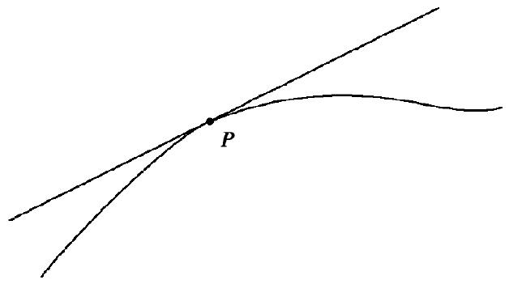
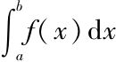
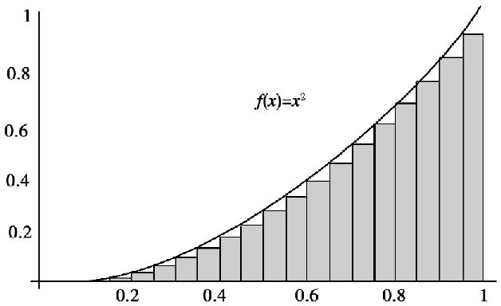
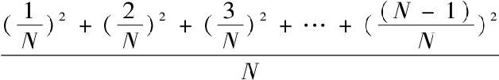
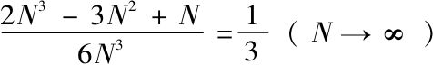
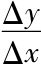
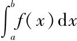
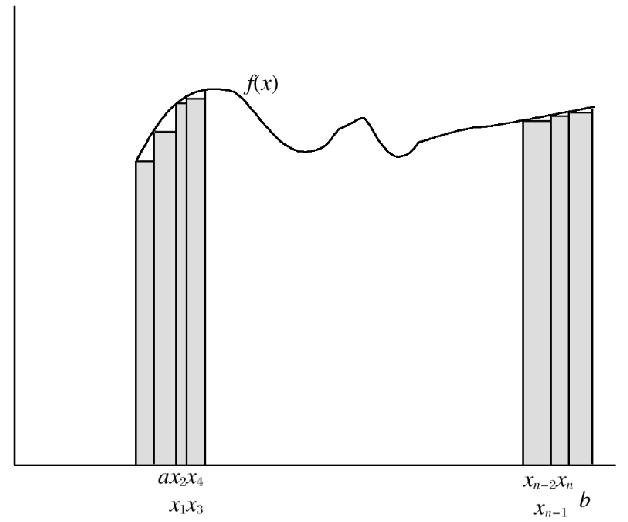

欧几里得（Euclid）以教学为生．当时的埃及国王托勒密一世（PtolemyⅠ）就是他的学生．托勒密国王曾经问欧几里得学习几何有无捷径，欧几里得回答：“陛下，几何学里没有专为国王铺设的皇家大道．”也许对于学习数学尤其是几何学而言并没有什么所谓的皇家大道．然而，如果有哪位数学家与皇室“同路而行”的话，那么这个数学家就是奥古斯丁·路易·柯西（Augustin-Louis Cauchy）．
奥古斯丁·路易·柯西出生于1789年8月21日，适逢法国革命初期．他的父亲路易·弗朗索瓦·柯西（Louis-François Cauchy）和母亲玛丽亚·马黛丽·迪珊丝·柯西（Marie-Madeleine Cauchy，neé Desestre）以柯西的出生月份以及其父亲的名字为其命名．路易·弗朗索瓦在1760年出生于鲁昂（Rouen）的技工家庭，玛丽亚·马黛丽在1767年生于巴黎的官僚家庭，他们在1787年结为夫妻．
路易·弗朗索瓦·柯西曾经以律师的身份接受过培训，并且成为皇家政权统治下的巴黎警察局局长．后来因为巴士底（Bastille）的政治风暴而失业，迫于生计不得不在一家慈善机构谋职．随着1792年恐怖统治在巴黎的施行，路易·弗朗索瓦担心他的保皇派立场会危及到生命安全，于是带着两个儿子举家迁至阿尔克伊（Arcueil）避难，这应该是奥古斯丁·路易·柯西平生第一次政治避难．
柯西一家在阿尔克伊背井离乡，生活虽然艰辛但也有一些裨益，他们在阿尔克伊的邻居中就有大数学家皮埃尔·西蒙·拉普拉斯（Pierre Simon Laplace）和约瑟夫·路易·拉格朗日（Joseph Louis Lagrange），后者曾预言过柯西的科学天赋，并提醒柯西父亲禁止柯西在17岁之前阅读一切数学书籍．或许是缘于路易·弗朗索瓦自己接受过经典的教育，也或许是因为拉格朗日的建议，路易·弗朗索瓦利用在阿尔克伊充足的闲暇时间来教育他的长子，并为他在希腊语和拉丁文方面打下了坚实的基础．直到1794年7月，罗伯斯庇尔（Robespierre）下台以及恐怖统治的结束，他们一家重返巴黎，路易·弗朗索瓦仍然继续亲自教育他的儿子．
路易·弗朗索瓦的好运随着拿破仑（Napoleon）的上台接踵而至，当拿破仑在1800年1月1日成为第一执政官后，路易·弗朗索瓦也当选为新产生的参议院的秘书长，当时的参议院成员就有拉普拉斯和拉格朗日．路易·弗朗索瓦听从拉格朗日的建议让13岁的儿子进入巴黎先贤祠中心学校学习．在先贤祠学校里，年轻的柯西用了两年时间学习古代语言、绘画以及自然史，他在古代语言方面表现突出，并获得了拉丁文写作和希腊语诗歌竞赛的第一名．尽管他在学习古典语言方面展现出过人的天赋，但奥古斯丁·路易·柯西在巴黎综合工科学校时只专注于学习工程学．1805年，柯西以第二名的成绩考入巴黎综合工科学校，秋天开学时，他选取了公共服务领域来作为自己的专业，因为这样的专业可以让他一旦毕业就能进入相关领域，由于对公路和桥梁的兴趣，他选择了土木工程专业．柯西很快就在他的班里出类拔萃，并在1807年以优异成绩毕业，在路桥学院继续深造．这所学校里的学生每年在课堂学习时间是12月到3月，其余时间都是在野外实践．
1810年，再次以优异成绩毕业的柯西成为交通部门的一名工程师，在瑟堡（Cherbourg）的一个海军军事基地工作，这个基地是拿破仑为入侵英格兰而修建的．柯西在致父亲的信函中提到了瑟堡之行，他在旅途中仅带了这样4本书：维吉尔（Virgil）的诗集，托马斯·坎贝斯（Thomas à Kempis）的《效仿基督》（Imitation of Christ），拉普拉斯的《天体力学》（Mécanique céleste）以及拉格朗日的《解析函数论》（Traité des fonctiones analytiques）．对于柯西在瑟堡的情况我们所知甚少，只知道他曾被介绍给在1811年5月访问瑟堡时的拿破仑．
1812年，柯西回到巴黎打算谋取一个学术职位以便有经济收入和精力来满足自己对数学的追求．但是由于长期疾患在身不得已以失败告终，后来成为一名修建奥勒运河（Oureq Canal）的技术人员．他曾经的良师益友拉格朗日在1813年去世以后，柯西参加了竞选拉格朗日在法兰西学院数学部的职位．他不仅在竞选中落败，而且在第一轮投票中就惨遭淘汰．此后两年，柯西竞选了研究院里的每一个空缺职位，但都没有成功．最终在1814年底，作为一种安慰，他被选入了巴黎数学爱好者学会．3个月之后，就在柯西准备开始他的教师生涯之际，随着拿破仑由流亡的厄尔巴岛（Elba）返回巴黎，法国再一次分崩离析．
1814年，波旁（Bourbon）王朝复辟，巴黎的许多主要机构开始肃清支持拿破仑的激进分子．柯西试图谋求曾经由西米恩·丹尼斯·泊松（Siméon-Denis Poisson）担任的力学教职的努力也失败了．他最终在巴黎综合工科学校获得了一个教席，因为数学家路易·庞赛特（Louis Poinsot）身体不好以至于不能进行长达3年的教学工作，所以由柯西作为他的分析学课程的“替补”教授，后来柯西凭借自身能力成为了分析学和力学的专职教授．
柯西终于有了一个正式的工作，他的父母开始催促他结婚．事实上，他们不仅催促他结婚，他的父亲还为柯西选好了新娘——爱萝丝·德·巴蕾（Aloïse de Bure）——一个以家族名字命名的出版公司老板的女儿．她带来了相当可观的嫁妆，并且举行了一场彰显其社会地位的结婚典礼．路易十八及整个皇室家庭都签署了结婚契约．
似乎所有迹象都表明，柯西对他的妻子和女儿如同可随时弃置脑后的装饰品一样漠不关心．也许他结婚只是为了满足父母那庸俗市侩的虚荣心．他和爱萝丝有两个女儿，生于1819年的玛丽·弗朗索瓦·艾丽西娅（Marie Françoise Alicia）以及生于1823年的玛丽·玛蒂尔达（Marie Mathilde）．她们后来都嫁入了贵族家庭．
柯西开始有意识地把他在巴黎综合工科学校数学课程的重点放在纯粹数学上．他最初关注的是微积分，也就是本章所摘选的主题．牛顿和莱布尼茨为解决特定的数学问题而发明了微积分．比如，牛顿是为了解决涉及椭圆和抛物线的天体运动问题．微积分在18世纪逐步发展起来，但是却是建立在一个不确定的基础之上．一个函数的导数被认为是求曲线在某点P处切线的公式的一种表示方法．

一个函数的积分被认为是无穷多个无穷小矩形的和，这些矩形的高是函数值、宽是以dx表示的无穷小量．莱布尼茨在

中准确地引入了积分符号，绝妙之处在于“summation”的首字母S的简洁性．因此，对于良态函数，比如f（x）=x2，求一个函数的积分问题就简化成了求一个具体级数的极限．对于函数f（x）=x2，积分就是高为x2、宽为dx的矩形的和．
因此，求函数f（x）=x2从0到1的积分就是求

当N→∞时的极限，即
.18世纪初期，数学家们很快就意识到积分和微分互为逆运算．直到18世纪中叶，莱昂哈德·欧拉（Leonhard Euler）和约翰·伯努利（Johann Bernoulli）才认定积分就是微分的逆运算．事实上，欧拉仅在求一个积分的近似值时使用到莱布尼茨对于积分就是求和的概念．求一个函数f（x）的积分，就必须找到另一个函数g（x），其导数就是f（x）．因此，函数f（x）=x2的积分就是g（x）=x3/3，因为f（x）=x2是g（x）=x3/3的导数．这些就是1818年柯西开始在巴黎综合工科学校任教时，微积分所立足的基础知识．仅仅有关于求良态函数积分的方法，但是没有积分理论．也许是受傅里叶（Fourier）证明了任意函数都可表示成一个无穷三角级数的启发，柯西建立了第一套积分理论，这套理论不依赖于特殊函数、不依赖于被他同样建立了新基础的微分、也不依赖于几何直观．在1821年出版的《分析教程》（Cours d’Analyse）的引言中，柯西说他希望为数学分析寻求一个与欧几里得《原本》（Elements）一样的严密性．他尤其关注的是如何消掉无穷小，这就需要一个关于连续性的新定义．柯西给出了关于单变量实值函数的连续性的以下定义：
设f（x）是变量x的函数，并设对介于两给定限之间的每一个x值，该函数总有一个唯一的有限值．如果在这两给定限之间有一个x值，当变量x获得一个无限小增量α，函数本身将增加一个差量f（x+α）-f（x），这个差同时依赖于新变量α和原变量x的值．如果对变量x在两给定限之间的每一个中间值，差f（x+α）-f（x）的绝对值都随α的无限减小而无限减小，那么就说函数f（x）是变量x在这两个限之间的一个连续函数．换言之，函数f（x）在给定限之间关于x保持连续，如果在这两个限之间变量的每个无限小增量总产生函数f（x）本身的一个无限小增量．
柯西在1823年出版的《无穷小计算概要》（Résumé des Lecons sur le Calcul Infinitésimal）的第一部分主要内容是微分，重点就是求一个函数y=f（x）的导数，他从老师拉格朗日那里选取术语“导数”以及符号“f′（x）”．然而，拉格朗日一直认为导数通常在语义上就是一条曲线的切线，寻求特定导数的公式仍是必要的．柯西远远超越了拉格朗日，并且定义f在x的导数就是当i“趋近”0时，差分比

=（f（x+i）-f（x））/i的极限，也就是现代数学中对于导数的非几何形式的定义．在他的《无穷小计算概要》的第二部分主要内容是积分的概念．柯西定义了一个连续函数f（x）从a到b的积分

，就是当区间［a，b］被分割成n+1个小区间，n个端点是x1，x2，…，xn-1，xn，并且a<x1<x2<…<xn-1<xn<b时，和（x1-a）f（x1）+（x2-x1）f（x2）+…+（xn-xn-1）f（xn）+（b-xn）f（b）或（x1-a）f（a）+（x2-x1）f（x1）+…+（xn-xn-1）f（xn-1）+（b-xn）f（xn）的极限．柯西将点x1，x2，…xn-1，xn的集合称为区间（a，b）的一个分割，（xi-xi-1）中的最大值称为分割的范数，S=（x1-a）f（a）+（x2-x1）f（x1）+…+（xn-xn-1）f（xn-1）+（b-xn）f（xn）称为分割的柯西和．
利用他的连续性定义，柯西证明了对于任意的两个分割P、P′，如果P和P′的分割范数充分小，那么其相应的和S与S′就无限地彼此趋近．
通过定义积分理论，柯西接下来就能够证明积分和导数之间的内在联系了，也就是现在所称之为的“微积分学基本定理”．这个定理指出，如果f是区间［a，b］上的可积函数，并且如果G（x）=f（t）从a到x（≤b）的积分，那么G（x）的导数就等于f（x），也即，G′（x）=f（x）．
尽管柯西能够启发那些最有天赋的学生，但他从不改变自己的课程去迎合资质一般的学生，这些学生来求学的目的也只是为了学习数学的基础知识来满足工程师职业的需要．因为柯西的讲座内容高深以至于不可能在规定的时间段内很好地展示，所以不得不经常延时．1821年4月，只是因为讲座超过了规定的时间，一些学生对此不满，对柯西喝倒彩并且擅自离开了课堂．
由于没有取悦于巴黎综合工科学校的校委员会，柯西的《无穷小计算概要》遭到了他们对于此书理论性有余而实用性不足的质疑．事实上，在1823年底，内务部部长就指派了一个包括拉普拉斯和泊松在内的委员会来保证数学教学适应工程学生的需要．于是，在接下来几年里，巴黎综合工科学校的管理部门持续监督柯西的讲座以确保其适合工程专业的学生．
在重新即位的国王路易十八（Louis ⅩⅧ）的统治下，法国经历了一段相对平静、稳定的时期．路易十八在1824年去世后，由他的弟弟查理十世（Charles Ⅹ）继位，查理十世企图恢复在革命之前的君主专制．由于整个法国都弥漫着对于共和党人的同情，政府试图压制他们，并且寻求那些支持君主专制的组织机构的帮助．柯西也是一个激进的保皇党人和天主教徒，并且还是保护天主教协会的奠基人之一．
1830年7月的革命推翻了查理十世的政权，其堂弟奥尔良公爵（Duke of Orleans）路易·菲利普（Louis-Phillipe）继位，学术界人士被要求像所有公职人员一样要对国王宣誓效忠．柯西不仅拒绝这样做，还自行流亡国外，也许他认为新政权会迫害像他这样的天主教徒．自然而然，柯西失去了工作．
他离开妻儿独自流亡国外，先是在瑞士边境的弗里堡（Fribourg）的一个城镇里和一群耶稣会信徒住在一起．这些人很快就把柯西推荐给他们的捐助人之一的撒丁王国（Sardinia）国王，国王为柯西在都灵（Turin）大学提供了一个职位．但是，柯西仅仅在那里待了三年多时间，因为他收到了查理十世自布拉格（Prague）发出的邀请，让柯西去教育查理十世同样流亡在外的孙子，也就是王储．直到那时，柯西才让人把他的家人接来与他开始了别离4年之后的团聚．
查理十世赏赐男爵头衔以奖励柯西，1838年，查理十世去世，王储的教育也随着他的18岁生日的到来而结束．随着为王室的工作暂告一段落，加之母亲的身体每况愈下，柯西返回巴黎，因为流亡在外使他失去了学术职位，柯西仅剩下的唯一能重新开始工作的身份，就是作为科学院的成员之一了．幸运的是，他以前的老师普朗尼（Prony）在他回国的第一年就去世了，柯西接替他当选为度量衡局的几何学教授．
随着政治环境逐渐宽松，学者们不再被要求宣誓效忠．尽管柯西对于新政权的冷漠不会危及到他的性命，但这的确阻碍了他的职业生涯，使得柯西在几家政府主办的机构里工作得很不愉快．1843年，柯西成为法兰西学院一个空缺的数学职位的3个候选人之一，尽管是候选者之中最优秀的那个，但由于他的极端保皇派立场以及耶稣信徒的同情者身份使得多数选举人并不支持柯西．最终，他在拥有24名成员的委员会的选举中仅仅得了3票．倍感羞辱的柯西宣布他不再争取任何一个哪怕是只有一丁点失败可能性的职位．
他在1838年到1848年间没有教学工作．仅仅是在科学院的工作为他提供了一个展示他为之热烈追求的科学工作的平台，在这10年间，柯西写出了240篇评论、札记以及研究论文．1848年2月的革命推翻了路易·菲利普政权，柯西希望他以前的学生波尔多公爵（Duke of Bordeaux）也即亨利五世能取得王位．但结果并非如此．第二共和国取代了路易·菲利普政权．尽管柯西不是一个共和党人，他却受益于共和国对于宣誓效忠废止的规定．很快他就在巴黎大学竞得了一个职位．当拿破仑三世在1852年成为国王之际，他赦免了柯西的宣誓效忠．
柯西的一生近乎狂热地工作，他共发表了789篇数学以及科学文章，这种惊人的创作直到他在1857年5月23日因风湿去世才终结．自1882年就开始出版他的《全集》（Oeuvres complètes），一直到1970年第27卷以及最后一卷出版，此项工作才全部完成．